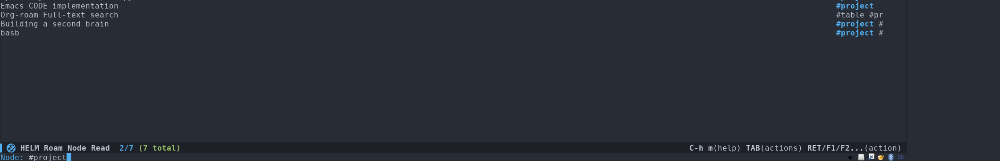
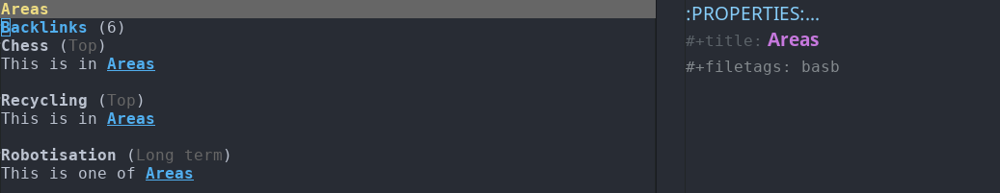

Table of Contents
1 Work notes
Here we do the actual work.
1.1 Renat
1.1.1 Brainstorm/Braindump
- The final task is to have an article offering an opinionated list of building blocks implementing CODE methodology.
- I want to concentrate on
- Search
- Highlighting
- Summarization
- We may want to make a set of videos/gifs demonstrating workflow with our instrument.
- Don't hesitate to use brute force
1.1.2 Useful links
A list of useful packages for implementing CODE with Emacs.
- GitHub - logseq/logseq: A privacy-first, open-source(frontend now, backend later) platform for knowledge management and collaboration. Desktop app download link: https://github.com/logseq/logseq/releases, roadmap: https://trello.com/b/8txSM12G/roadmap
- EmacsWiki: Highlight Library Highlight the text.
- Emacs Enriched Text mode Persistently store highlights and Emacs markup in text files.
- Pandoc - About pandoc Transform various documents to org-mode format.
- A miro board of basb course Board
- Org pandoc import https://github.com/tecosaur/org-pandoc-import
1.1.3 Keywords
1.1.4 Capture
Web-pages
- pandoc
Images
- test google cloud vision api
rekognition api I ended up using rekognition API
You need amazon account to use it.
#!/bin/bash set -euo pipefail CREDENTIALS="$1" TARGET_BASENAME="$(basename "$2")" docker run --user "$(id -u):$(id -g)" -v /home/renat/.aws:/tmp/.aws -e HOME=/tmp -v "$(realpath "$2"):/mnt/$TARGET_BASENAME" -w /mnt --rm -i amazon/aws-cli --profile "$CREDENTIALS" rekognition detect-labels --image-bytes "fileb://$TARGET_BASENAME"
- Use pandoc to convert documents to org-mode format
I don't trust browser extenstions, so I capture web pages in a different way:
Whenever I find something worth reading, I open it with Firefoxes built-in page cleaner 1 and just save the HTML page into my org archive2.
Then I use pandoc to convert the page I saved into org-mode format.
cd ~/Dropbox/org/html pandoc -f html -t org <file name>.html -o <file name>.org
Then, if I don't read the article immediately, I store a link with org-store-link and put it into appropriate resource, area or project file.
- highlighting
To keep track of important stuff inside the file I highlight the text I selected with
highlight.el.Use different colors for different highlights. When I'm reading, I try to keep track of statements and questions I'm interested in. The code below defines appropriate faces.
(defface highlight-question '((((class color) (min-colors 88) (background light)) :background "darkseagreen2") (((class color) (min-colors 88) (background dark)) :background "darkolivegreen") (((class color) (min-colors 16) (background light)) :background "darkseagreen2") (((class color) (min-colors 16) (background dark)) :background "darkolivegreen") (((class color) (min-colors 8)) :background "green" :foreground "black") (t :inverse-video t)) "Face for highlighting questions." :group 'basic-faces) (defface highlight-statement '((((class color) (min-colors 88) (background light)) :background "#3c4c7a") (((class color) (min-colors 88) (background dark)) :background "#3c4c7a") (((class color) (min-colors 16) (background light)) :background "#3c4c7a") (((class color) (min-colors 16) (background dark)) :background "#3c4c7a") (((class color) (min-colors 8)) :background "blue" :foreground "black") (t :inverse-video t)) "Face for highlighting statements." :group 'basic-faces) (defface highlight-general '((((class color) (min-colors 88) (background light)) :background "#614b61") (((class color) (min-colors 88) (background dark)) :background "#614b61") (((class color) (min-colors 16) (background light)) :background "#614b61") (((class color) (min-colors 16) (background dark)) :background "#614b61") (((class color) (min-colors 8)) :background "red" :foreground "black") (t :inverse-video t)) "Face for highlighting." :group 'basic-faces)Helper functions and their keybindings so we can mark text quickly. I use
ESC ESC hprefix. Feel free to use your own.(defun hlt-question() (interactive) (hlt-highlight-region (region-beginning) (region-end) 'highlight-question)) (defun hlt-statement() (interactive) (hlt-highlight-region (region-beginning) (region-end) 'highlight-statement)) (global-set-key (kbd "ESC M-h q") #'hlt-question) (global-set-key (kbd "ESC M-h s") #'hlt-statement) (global-set-key (kbd "ESC M-h h") #'hlt-general) (global-set-key (kbd "ESC M-h u") #'hlt-unhighlight-region)
- Twelve favourite problems
Them aim here is to extract projects/areas/resources I spent the most time in.
- Capture templates
- Project
This template will create a project entry and will ask you to set a deadline.
(add-to-list 'org-roam-capture-templates ("p" "Project" plain "%?" :if-new (file+head "roam/%<%Y%m%d%H%M%S>-${slug}.org" "#+title: ${title}\n#+roam_tags project\n\n* ${title}\n :DEADLINE: %^{Project deadline}t\n\n") :unnarrowed t))
- Project
1.1.5 Organize
Tagging your notes as PARA objects.
I have two approaches to manage projects, areas and resource tags: by roam tags and by roam links.
- Tags
For every note you assign an appropriate tag with
org-roam-tag-add.Then you can see all of your projects for example just by searching by project tag.
On roam v2 it will look like.

- Roam linkns
You create roam fiels named
Project,Area,Resourceand then put it into a roam entry as a link.Then, you open the
Areasnote and in your org-roam buffer you will see: